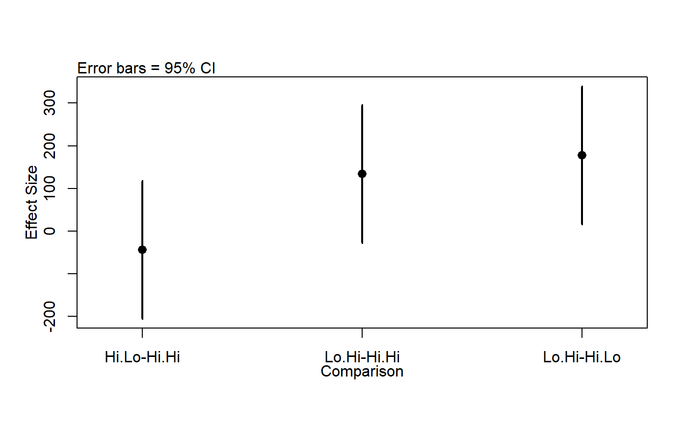

<!-- Generated by pkgdown: do not edit by hand -->
<!DOCTYPE html>
<html>
  <head>
  <meta charset="utf-8">
<meta http-equiv="X-UA-Compatible" content="IE=edge">
<meta name="viewport" content="width=device-width, initial-scale=1.0">

<title>Simulated data on the effects of diet on deer antlers. — antlers • wildlifeR</title>

<!-- jquery -->
<script src="https://code.jquery.com/jquery-3.1.0.min.js" integrity="sha384-nrOSfDHtoPMzJHjVTdCopGqIqeYETSXhZDFyniQ8ZHcVy08QesyHcnOUpMpqnmWq" crossorigin="anonymous"></script>
<!-- Bootstrap -->

<link href="https://maxcdn.bootstrapcdn.com/bootstrap/3.3.7/css/bootstrap.min.css" rel="stylesheet" integrity="sha384-BVYiiSIFeK1dGmJRAkycuHAHRg32OmUcww7on3RYdg4Va+PmSTsz/K68vbdEjh4u" crossorigin="anonymous">
<script src="https://maxcdn.bootstrapcdn.com/bootstrap/3.3.7/js/bootstrap.min.js" integrity="sha384-Tc5IQib027qvyjSMfHjOMaLkfuWVxZxUPnCJA7l2mCWNIpG9mGCD8wGNIcPD7Txa" crossorigin="anonymous"></script>

<!-- Font Awesome icons -->
<link href="https://maxcdn.bootstrapcdn.com/font-awesome/4.6.3/css/font-awesome.min.css" rel="stylesheet" integrity="sha384-T8Gy5hrqNKT+hzMclPo118YTQO6cYprQmhrYwIiQ/3axmI1hQomh7Ud2hPOy8SP1" crossorigin="anonymous">


<!-- pkgdown -->
<link href="../pkgdown.css" rel="stylesheet">
<script src="../jquery.sticky-kit.min.js"></script>
<script src="../pkgdown.js"></script>
  
  
<!-- mathjax -->
<script src='https://mathjax.rstudio.com/latest/MathJax.js?config=TeX-AMS-MML_HTMLorMML'></script>

<!--[if lt IE 9]>
<script src="https://oss.maxcdn.com/html5shiv/3.7.3/html5shiv.min.js"></script>
<script src="https://oss.maxcdn.com/respond/1.4.2/respond.min.js"></script>
<![endif]-->


  </head>

  <body>
    <div class="container template-reference-topic">
      <header>
      <div class="navbar navbar-default navbar-fixed-top" role="navigation">
  <div class="container">
    <div class="navbar-header">
      <button type="button" class="navbar-toggle collapsed" data-toggle="collapse" data-target="#navbar">
        <span class="icon-bar"></span>
        <span class="icon-bar"></span>
        <span class="icon-bar"></span>
      </button>
      <a class="navbar-brand" href="../index.html">wildlifeR</a>
    </div>
    <div id="navbar" class="navbar-collapse collapse">
      <ul class="nav navbar-nav">
        <li>
  <a href="../index.html">
    <span class="fa fa-home fa-lg"></span>
     
  </a>
</li>
<li>
  <a href="../reference/index.html">Reference</a>
</li>
<li class="dropdown">
  <a href="#" class="dropdown-toggle" data-toggle="dropdown" role="button" aria-expanded="false">
    Articles
     
    <span class="caret"></span>
  </a>
  <ul class="dropdown-menu" role="menu">
    <li>
      <a href="../articles/ANOVA_deer_antlers.html">Intro to 1-way ANOVA: impacts of diet on deer antlers</a>
    </li>
    <li>
      <a href="../articles/data_cleaning_dplyr_filter.html">Data Cleaning: Filtering focal rows with dplyr</a>
    </li>
    <li>
      <a href="../articles/Inference_by_eye.html">Inference-by-eye using RA Fisher's Cat Data</a>
    </li>
    <li>
      <a href="../articles/merge_BBS_with_landcover.html">Data cleaning: Merging 2 large data sets with dplyr</a>
    </li>
    <li>
      <a href="../articles/reporting_paired_t_test_results.html">Running &amp; reporting paired t-tests in R</a>
    </li>
    <li>
      <a href="../articles/reporting_t_test_results.html">Reporting statistical result from a 2-sample t-test</a>
    </li>
    <li>
      <a href="../articles/selecting_different_spp_and_landcovers.html">Selecting different species and landovers from the wildlifeR package</a>
    </li>
    <li>
      <a href="../articles/the_wildlifeR_package.html">Analyzing BBS data from the wildlifeR package</a>
    </li>
  </ul>
</li>
      </ul>
      
      <ul class="nav navbar-nav navbar-right">
        
      </ul>
    </div><!--/.nav-collapse -->
  </div><!--/.container -->
</div><!--/.navbar -->

      
      </header>

      <div class="row">
  <div class="col-md-9 contents">
    <div class="page-header">
    <h1>Simulated data on the effects of diet on deer antlers.</h1>
    </div>

    
    <p>Data simulated based on summary information in Asleson et al.
(1997).  Deer were fed three different diets that varied in the
timeing of high protein.  Data are suitable for analysis
with 1-way ANOVA.</p>
    

    <pre class="usage"><span class='no'>antlers</span></pre>
        
    <h2 class="hasAnchor" id="format"><a class="anchor" href="#format"></a>Format</h2>

    <p>A data frame</p><dl class='dl-horizontal'>
  <dt>diet</dt><dd><p>Experimental diet during both spring and summer.  Hi.Hi = High quality diet in both season.  Hi.Lo = high quality diet in spring but poor in summer.</p></dd>
  <dt>mass</dt><dd><p>Antler mass in grams</p></dd>
  <dt>circum</dt><dd><p>basal circumference in mm</p></dd>
  <dt>beam</dt><dd><p>Length of main beam of antler in mm</p></dd>
  <dt>spread</dt><dd><p>spread between points in mm</p></dd>
  <dt>diet.name</dt><dd><p>further details on diet treatment</p></dd>
</dl>
    
    <h2 class="hasAnchor" id="details"><a class="anchor" href="#details"></a>Details</h2>

    <p>See the vignette "Intro to 1-way ANOVA: impacts of diet on deer antlers"
for a thorough exploration of these data.   The examples below demonstate
basic plotting and 1-way ANOVA.</p>
    
    <h2 class="hasAnchor" id="references"><a class="anchor" href="#references"></a>References</h2>

    <p>Asleson et al. 1997.  Effects of seasonal protein restriction on antlerogenesis and body mass in adult male white-tailed deer.  Journal of Wildlife Management 61.</p>
    

    <h2 class="hasAnchor" id="examples"><a class="anchor" href="#examples"></a>Examples</h2>
    <pre class="examples"><div class='input'>
<span class='co'>## Load packages</span>

<span class='fu'>library</span>(<span class='no'>ggplot2</span>)
<span class='fu'>library</span>(<span class='no'>ggpubr</span>)

<span class='co'>## Explore data graphically</span>

<span class='co'>### Plot boxplots</span>
<span class='fu'><a href='http://www.rdocumentation.org/packages/ggpubr/topics/ggboxplot'>ggboxplot</a></span>(<span class='kw'>data</span> <span class='kw'>=</span> <span class='no'>antlers</span>,
          <span class='kw'>y</span> <span class='kw'>=</span> <span class='st'>"mass"</span>,
          <span class='kw'>x</span> <span class='kw'>=</span> <span class='st'>"diet"</span>,
          <span class='kw'>fill</span> <span class='kw'>=</span> <span class='st'>"diet"</span>)</div><div class='img'></div><div class='input'>
<span class='co'>### Plot histograms</span>
<span class='fu'><a href='http://www.rdocumentation.org/packages/ggpubr/topics/gghistogram'>gghistogram</a></span>(<span class='kw'>data</span> <span class='kw'>=</span> <span class='no'>antlers</span>,
          <span class='kw'>x</span> <span class='kw'>=</span> <span class='st'>"mass"</span>,
          <span class='kw'>title</span> <span class='kw'>=</span> <span class='st'>"All data"</span>)</div><div class='output co'>#&gt; <span class='warning'>Warning: Using `bins = 30` by default. Pick better value with the argument `bins`.</span></div><div class='img'></div><div class='input'>
 <span class='fu'><a href='http://www.rdocumentation.org/packages/ggpubr/topics/gghistogram'>gghistogram</a></span>(<span class='kw'>data</span> <span class='kw'>=</span> <span class='no'>antlers</span>,
          <span class='kw'>x</span> <span class='kw'>=</span> <span class='st'>"mass"</span>,
          <span class='kw'>facet.by</span> <span class='kw'>=</span> <span class='st'>"diet"</span>,
          <span class='kw'>fill</span> <span class='kw'>=</span> <span class='st'>"diet"</span>,
          <span class='kw'>title</span> <span class='kw'>=</span> <span class='st'>"Faceted by diet"</span>)</div><div class='output co'>#&gt; <span class='warning'>Warning: Using `bins = 30` by default. Pick better value with the argument `bins`.</span></div><div class='img'></div><div class='input'>
<span class='co'>## Plot means with 95% confidence intervals</span>
<span class='fu'><a href='http://www.rdocumentation.org/packages/ggpubr/topics/ggerrorplot'>ggerrorplot</a></span>(<span class='no'>antlers</span>,
  <span class='kw'>x</span> <span class='kw'>=</span> <span class='st'>"diet"</span>,
  <span class='kw'>y</span> <span class='kw'>=</span> <span class='st'>"mass"</span>,
  <span class='kw'>desc_stat</span> <span class='kw'>=</span> <span class='st'>"mean_ci"</span>,
  <span class='kw'>add</span> <span class='kw'>=</span> <span class='st'>"mean"</span>,
  <span class='kw'>ylim</span> <span class='kw'>=</span> <span class='fu'>c</span>(<span class='fl'>400</span>,<span class='fl'>900</span>))</div><div class='img'></div><div class='input'>
<span class='co'>## 1-way ANOVA</span>

<span class='co'>### null model</span>
<span class='no'>model.null</span> <span class='kw'>&lt;-</span> <span class='fu'>lm</span>(<span class='no'>mass</span> ~ <span class='fl'>1</span>, <span class='kw'>data</span> <span class='kw'>=</span> <span class='no'>antlers</span>)

<span class='co'>### model of interest</span>
<span class='no'>model.alt</span> <span class='kw'>&lt;-</span> <span class='fu'>lm</span>(<span class='no'>mass</span> ~ <span class='no'>diet</span>, <span class='kw'>data</span> <span class='kw'>=</span> <span class='no'>antlers</span>)

<span class='co'>### compare models</span>
<span class='fu'>anova</span>(<span class='no'>model.null</span>, <span class='no'>model.alt</span>)</div><div class='output co'>#&gt; Analysis of Variance Table
#&gt; 
#&gt; Model 1: mass ~ 1
#&gt; Model 2: mass ~ diet
#&gt;   Res.Df    RSS Df Sum of Sq    F Pr(&gt;F)  
#&gt; 1     29 747262                           
#&gt; 2     27 575719  2    171543 4.02   0.03 *
#&gt; ---
#&gt; Signif. codes:  0 <U+0091>***<U+0092> 0.001 <U+0091>**<U+0092> 0.01 <U+0091>*<U+0092> 0.05 <U+0091>.<U+0092> 0.1 <U+0091> <U+0092> 1</div><div class='input'>
<span class='co'>## Pairwise comparisons after 1-way ANOVA</span>
<span class='co'>### no corrections for multiple comparisons</span>
<span class='fu'>pairwise.t.test</span>(<span class='kw'>x</span> <span class='kw'>=</span> <span class='no'>antlers</span>$<span class='no'>mass</span>, <span class='kw'>g</span> <span class='kw'>=</span> <span class='no'>antlers</span>$<span class='no'>diet</span>,
      <span class='kw'>p.adjust.method</span> <span class='kw'>=</span> <span class='st'>"none"</span>)</div><div class='output co'>#&gt; 
#&gt; 	Pairwise comparisons using t tests with pooled SD 
#&gt; 
#&gt; data:  antlers$mass and antlers$diet 
#&gt; 
#&gt;       Hi.Hi Hi.Lo
#&gt; Hi.Lo 0.51  -    
#&gt; Lo.Hi 0.05  0.01 
#&gt; 
#&gt; P value adjustment method: none </div><div class='input'>
<span class='co'>### Bonferonni correction</span>
<span class='fu'>pairwise.t.test</span>(<span class='kw'>x</span> <span class='kw'>=</span> <span class='no'>antlers</span>$<span class='no'>mass</span>, <span class='kw'>g</span> <span class='kw'>=</span> <span class='no'>antlers</span>$<span class='no'>diet</span>,
      <span class='kw'>p.adjust.method</span> <span class='kw'>=</span> <span class='st'>"bonferroni"</span>)</div><div class='output co'>#&gt; 
#&gt; 	Pairwise comparisons using t tests with pooled SD 
#&gt; 
#&gt; data:  antlers$mass and antlers$diet 
#&gt; 
#&gt;       Hi.Hi Hi.Lo
#&gt; Hi.Lo 1.00  -    
#&gt; Lo.Hi 0.15  0.03 
#&gt; 
#&gt; P value adjustment method: bonferroni </div><div class='input'>
<span class='co'>## Tukey test</span>

<span class='co'>### re-fit model with aov()</span>
<span class='no'>model.alt.aov</span> <span class='kw'>&lt;-</span> <span class='fu'>aov</span>(<span class='no'>mass</span> ~ <span class='no'>diet</span>, <span class='kw'>data</span> <span class='kw'>=</span> <span class='no'>antlers</span>)

<span class='co'>### TukeyHSD() on model from aov()</span>
<span class='fu'>TukeyHSD</span>(<span class='no'>model.alt.aov</span>)</div><div class='output co'>#&gt;   Tukey multiple comparisons of means
#&gt;     95% family-wise confidence level
#&gt; 
#&gt; Fit: aov(formula = mass ~ diet, data = antlers)
#&gt; 
#&gt; $diet
#&gt;             diff    lwr upr p adj
#&gt; Hi.Lo-Hi.Hi  -44 -205.9 118 0.781
#&gt; Lo.Hi-Hi.Hi  134  -28.1 296 0.120
#&gt; Lo.Hi-Hi.Lo  178   15.9 340 0.029
#&gt; </div><div class='input'>
<span class='co'>### Plot effect sizes</span>
<span class='fu'><a href='plotTukeysHSD.html'>plotTukeysHSD</a></span>(<span class='fu'>TukeyHSD</span>(<span class='no'>model.alt.aov</span>))</div><div class='img'></div></pre>
  </div>
  <div class="col-md-3 hidden-xs hidden-sm" id="sidebar">
    <h2>Contents</h2>
    <ul class="nav nav-pills nav-stacked">
      
      <li><a href="#format">Format</a></li>

      <li><a href="#details">Details</a></li>

      <li><a href="#references">References</a></li>
      
      <li><a href="#examples">Examples</a></li>
    </ul>

  </div>
</div>

      <footer>
      <div class="copyright">
  <p>Developed by Brouwer Nathan.</p>
</div>

<div class="pkgdown">
  <p>Site built with <a href="http://hadley.github.io/pkgdown/">pkgdown</a>.</p>
</div>

      </footer>
   </div>

  </body>
</html>
